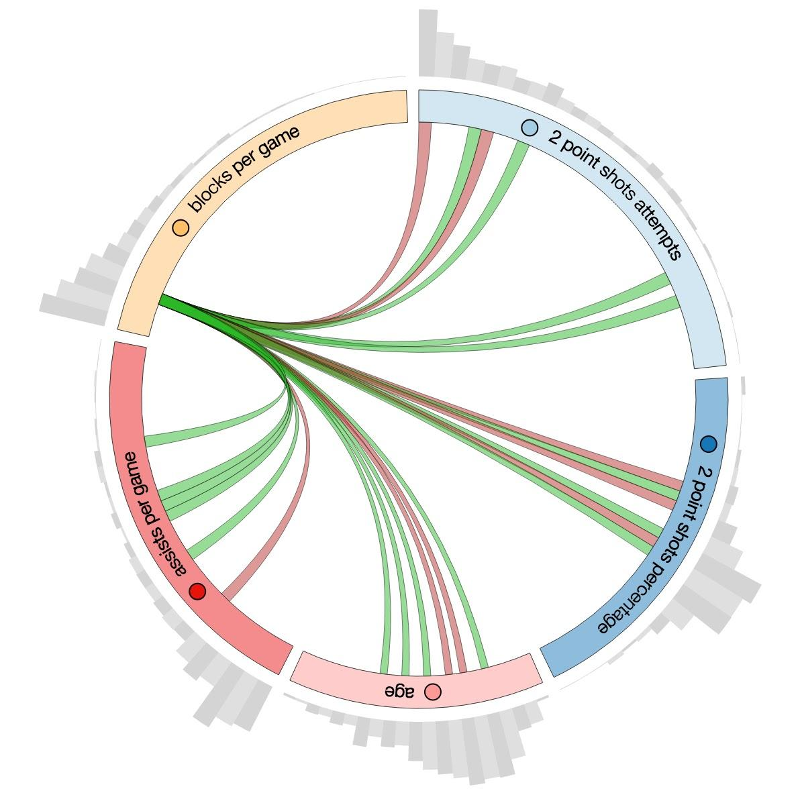
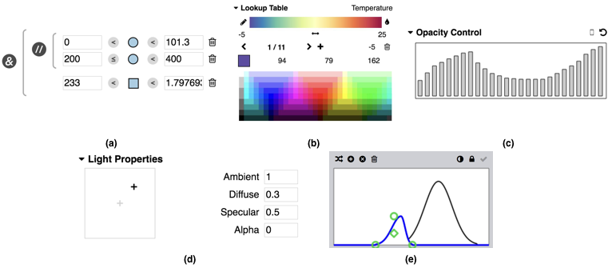
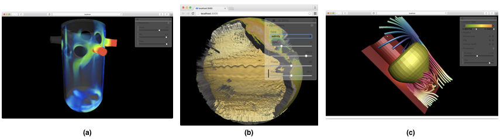
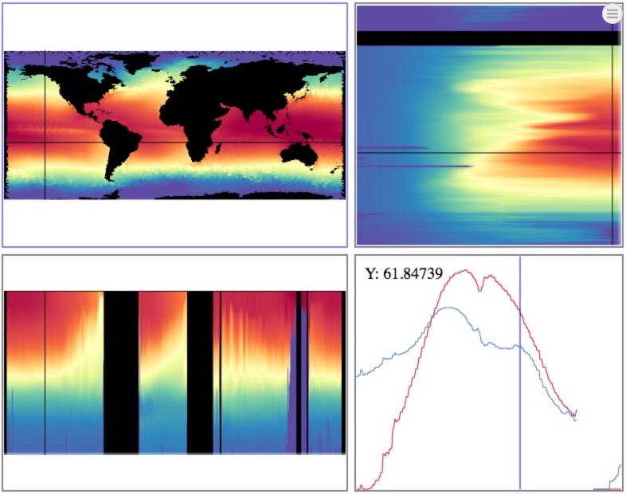
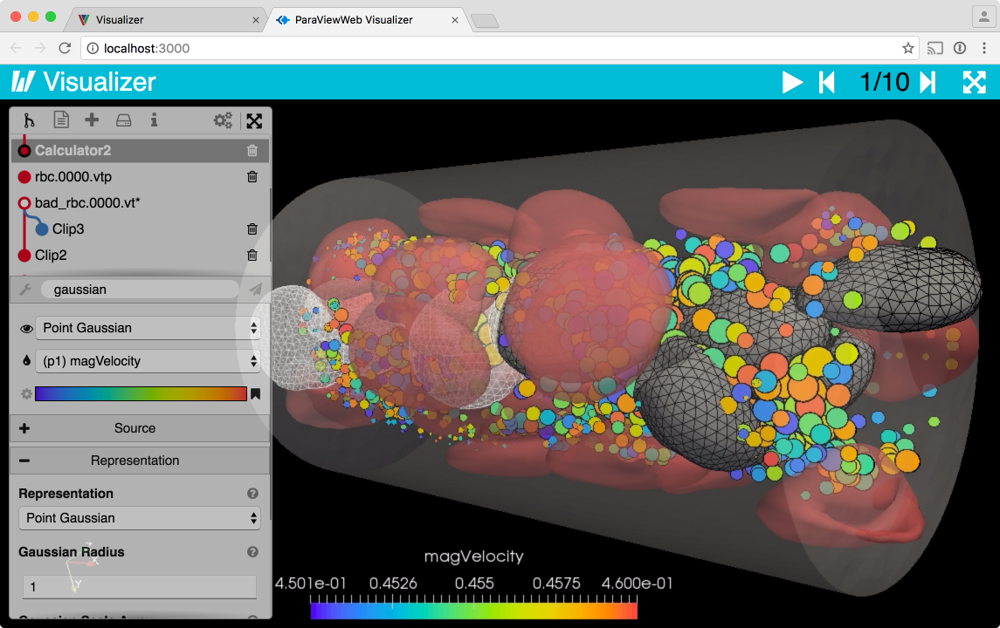
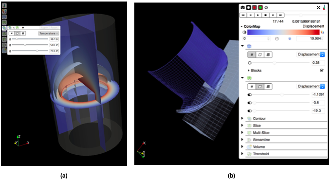
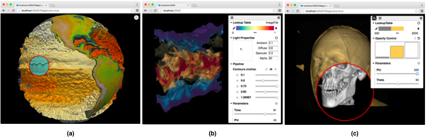
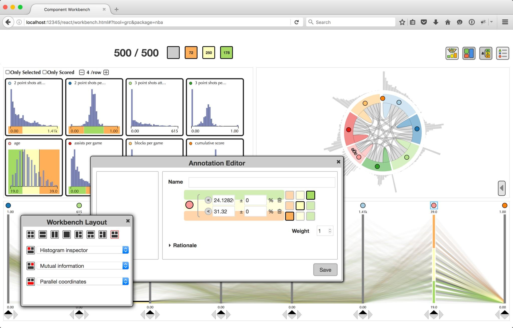
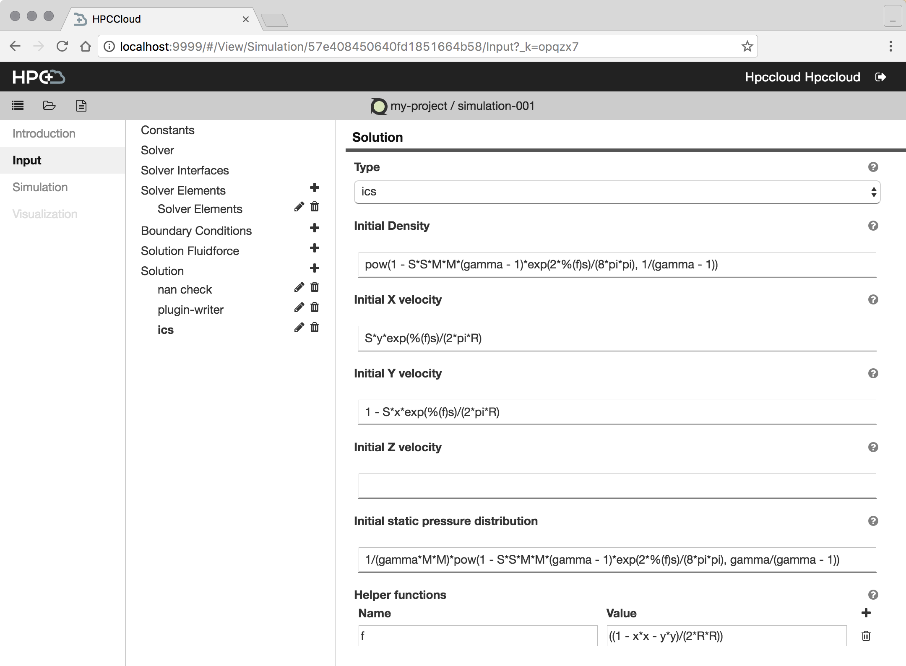
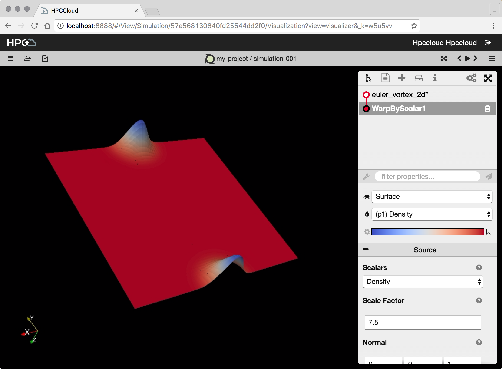

A JavaScript Library for Building Web-based Applications with Scientific Visualization
ParaViewWeb, the JavaScript library, is a Web framework to build applications with interactive scientific visualization inside the Web browser. Those applications can leverage a VTK and/or ParaView backend for large data processing and rendering, but can also be used on static Web server like Apache or NGINX. You can even build local command line tools and use your browser to interact with your application.
A modern approach
The all new ParaViewWeb has embraced the next-generation of JavaScript specifications, which allow better code reuse across projects without forcing unnecessary code bloat into the developers application. This capability allows ParaViewWeb contributors to gather all expertise in the form of components, UI, data handling and algorithms for Web-based scientific visualization within ParaViewWeb, the JavaScript library, without any unwanted cost to the end applications leveraging the library. The developer simply extracts the capabilities and features they need, and discard the rest in quickly building their next-generation Web-based application with scientific visualization.
Capabilities and Features
ParaViewWeb provides several modules that application developers will find useful for building a modern Web-based application with scientific data and visualization.
Common: Data Model and Helpers
The data model defines how data and components are associated with each other. In ParaViewWeb, we aim to make the simplest, most general data model that satisfy the concrete requirements of the Web-based application with scientific visualization. The common module provides core data model and helpers to intelligently enhance the data model in the presence of certain components and capabilities, which include: color handling, offscreen canvas, WebGL utilities and the various data model extensions to hold the state for a number of visualization components and UI widgets.

Figure 1: Mutual information Chord Diagram for the 2014 - 2015 NBA season player statistics.
Visualization Components
ParaViewWeb offers a collection of visualization components to illustrate patterns and structure in large data sets. Each component highlights one of the many possible ways of viewing datasets like the one presented in Figure 1. These visualization components can be integrated into a Web-based workbench-like environment that provides new interfaces to support discovery, exploration, filtering and analysis. The visualization components module is a set of interactive tools for exploring and visualizing data that share the same API (setContainer/resize/render/destroy). Currently, these visualization components demonstrate various types of information visualization. ParaViewWeb has a mutual information diagram (depicted in Figure 1). The mutual information of two random variables is a measure of the mutual dependence between the two variables. It implies the knowledge obtained about one random variable via the other random variable. The visualization components also includes: a field selector, one-dimensional (1D) histograms, and parallel coordinates. Expect to see a Sankey diagram, a specific type of flow diagram in which the width of the arrows is shown proportionally to the flow quantity, as well as other tools for annotating data in the near future.

Figure 2: (a) a collapsable field selector capable of displaying field name, min value, max value and a 1D histogram, (b) 1D/2D Histograms, and (c) parallel coordinates.
Interaction
Interactive visualizations are a crucial mechanism for discovery in science, engineering and medical research. These tools enable end-users to: focus on interesting details; customize the content; and modify the visualization, all while enhancing the exploration of large amounts of data. At their best, they facilitate an engaging environment for inquiry. ParaViewWeb’s interaction module, consisting of utilities to aid with user input/interaction, mouse and touch handling, makes it easier for the developer in creating captivating Web-based applications with scientific visualization.
Data access (I/O)
The IO module of ParaViewWeb aims to provide connectivity to various sources of data including the following three main types:
- Core: Core provides several download helpers to deal with pattern-based data querying of various type of data (binary array, image, text, csv, json, etc.).
- WebSocket: WebSocket provides communication helpers for the VTK and/or ParaView Web backends.
- Girder: Girder provides a composable network client that simplify the interaction with Kitware’s Girder a data management system as a backend.
ParaViewWeb helpers use only XHR and WebSocket for the Client based JavaScript (Web browsers).
XHR is the main HTTP client built into browsers. XHR (specifically XHR version 2) is implemented in native (C++) code in the browser and exposed as a JavaScript API. For XHR, ParaViewWeb relies on the standard request to fetch data of any kind, but provides a higher-level API for access (i.e. manager.fetchData({ time: 21, field: ‘temperature’ })).
WebSockets provides a network connection between the server and the client over HTTP which allow bidirectional communication, and are supported in most browsers today. ParaViewWeb relies on WebSockets to provide a simple interface with Python-based VTK and/or ParaView servers for producing interactive data, geometry and images.
Finally ParaViewWeb provides a client for Kitware’s data management system, Girder, to provide a consistent interface to it from within the JavaScript code base.

Figure 3: (a) selection editor, (b) lookup table editor, (c) equalizer editor, (d) light properties editor, and (e) transfer function editor.
UI widgets
ParaViewWeb provides two forms of UI widgets:
- Native UI - Native UI widgets are composed of various UI pieces with no dependencies, and
- React UI - React UI widgets are composed of React, from the OpenSource projects of Facebook developer team.
ParaViewWeb’s NativeUI and React modules provide the various UI widgets.
The developers of ParaViewWeb have found React makes it easy to create complex interactive UIs from small, encapsulated React components. ParaViewWeb, the JavaScript library, provides many of the known UI components (e,g, TextInput, …), but it also contains some amazing widgets more suitable to scientific visualization interaction (see Figure 3).
The selection editor in Figure 3a, can be used to perform a multiple range, multiple field selection. The creation of a lookup table (depicted Figure 3b) is a common task for rendering scientific visualization techniques. We have used the equalizer editor, presented in Figure 3c, as an opacity control for scientific visualization elements such as computer-aided design (CAD) parts or layered iso-contours in a three-dimensional (3D) data set. The light properties, editor displayed in Figure 3d, of a scene is crucial in rendering for VTK and ParaView, WebGL scientific visualization elements, or JavaScript or WebGL composite scientific visualization elements from images. Finally, a transfer function editor, shown in Figure 3e, is used in both opacity mapping for scientific visualization elements and volume visualization.
Rendering viewers
The Rendering module gathers both rendering viewers and data processing algorithms used for generating images or other types of data structures. This module may be renamed and restructure in the near future since more data processing algorithms are generated as opposed to actual rendering code.
ParaViewWeb has image viewers, JavaScript or WebGL image compositing viewers, and WebGL viewers for geometry data structures (see Figure 4). Up to now ParaViewWeb has been using Three.js for handling the 3D scene for WebGL. However, we will begin to migrate away from Three.js to vtk.js as time permits because vtk.js natively supports dynamic geometry data structures.

Figure 4: ParaViewWeb’s example image viewer, JavaScript or WebGL image compositing viewer, and WebGL viewer for geometry.
An example of the data processing algorithms in this module is an algorithm that allows the application developer to slice a 3D floating point value volume to produce an image using a lookup table to convert the numerical values into an actual color. In Figure 5, the application developer uses a multi-view layout component and slices the 3D volume in x, y and z and colors the slices by the temperature field using a spectral lookup table.

Figure 5: ArcticViewer’s layout component and slices the 3D floating point value, temperature, volume with three orthogonal slices and a probe plot in time.
ParaViewWeb Applications
ParaViewWeb is used in many Kitware, Inc. Web projects.
Visualizer (git/io)
The Visualizer Web application provides a ParaView-like, the Qt application, experience inside the Web browser. The ParaViewWeb library contains all the components needed to build the UI and the data access (I/O) routines to communicate to the ParaView server using WebSocket connectivity. Visualizer is simply connecting all the components together in a meaningful way.

Figure 6: Visualizer, displaying the visualization pipelines and color map editor with similar functionality to the ParaView Qt application.
In addition to running Visualizer remotely through as a service, ParaViewWeb provides a nice command line interface so that end-user might utilize Visualizer locally with their locally installed version of ParaView.
LightViz (git/io)
The LightViz application aims to provide a simpiler, more intuitive and interactive scientific visualization utility, which could be easily adapted to specific data and tasks. Have we succeeded? It probably needs few iterations between user studies and re-engineering. What it currently does is providing the end-user with about eight simplified modules to ParaView’s most utilized visualization techniques or filters. Modules can be exposed or removed through a json configuration file, and creating new modules from existing ParaView filters is trivial.
All the components LightViz requires to build the UI as well as the WebSocket connectivity to the ParaView server is delivered through ParaViewWeb, the JavaScript library.

Figure 7: (a) LightViz with the new default user interface, and (b) LightViz with the ArcticViewer interface.
In Figure 7 a and b, We illustrate how easy it is to recast the LightViz scientific visualization application with a new UI courtesy of ParaViewWeb.
ArcticViewer (git/io)
The ArcticViewer scientific visualization application breaks the pattern by not requiring a processing/rendering server like VTK or ParaView. In fact, ArcticViewer relies on the data being pre-processed to allow it to be directly read by the Web client. In this use case, ParaViewWeb provides the various data handlers, UI widgets, data access, and rendering algorithms and viewers to drive the application.

Figure 8: ArcticViewer with (a) compositing opaque visualization objects from images, (b) compositing transparent objects from images, and (c) using two rendering passes to expose a magic hole in the compositing of transparent visualization objects from images.
Like Visualizer, ArcticViewer can be run for scientific visualization directly from a command line. The various types of data are implicitly understood via a json file, and the appropriate components are instantiated based on the particular type of data. If there isn’t a set of components for a type of data, they can be simply created and added to the ParaViewWeb JavaScript library.
ArcticViewer allows the end-user to browse through data products that have been generated in situ or in batch mode to produce interactive scientific visualization this includes data produced with ParaView Catalyst with the Cinema format. It provides viewing methods for images, composite opaque and transparent visualization objects from images, visualization objects as geometry, and complete 3D volumes.
DataViewer
In a recent project, we created DataViewer, a work in progress, which allows the end-user to interact with BigData with ParaViewWeb’s information visualization components and UI widgets.

Figure 9: DataViewer showing histograms, mutual information chord diagram, selection editor, workbench layout editor and parallel coordinates.
SimPut (git/io)
SimPut, as opposed to the previous presented applications, does not provide scientific visualization (it does use some charts). SimPut provides an environment for dynamically generating a UI with various forms of inputs in order to produce a templated output file for a simulation code. SimPut is leveraging from ParaViewWeb its infrastructure to build UI widgets. In addition, parts of the SimPut UI are also used inside Visualizer to create the Proxy Editor Panels.

Figure 10: SimPut setting input parameters for the PyFR simulator.
HPCCloud (git/io)
HPCCloud is a web-based simulation environment that utilizes web technologies to deliver an innovative Software as a Service (SaaS) advanced modeling and simulation environment. The platform allows the user to take existing computational code that is designed to run on a high-performance computing (HPC) resource and develop an end-to-end simulation workflow, from input generation right through to post-processing. HPCCloud presents the workflows through a simple, intuitive user interface (UI), which shields the user from much of the complexity that comes with running a simulation code on an HPC resource.
HPCCloud utilizes several embedded Kitware, Inc. frameworks. For an example PyFR workflow with three stages, HPCCloud uses:
1) Input generation - Simput, based on ParaViewWeb, will generate an input deck for the simulation.
2) Simulation - The simulation code will run on the Cloud-based HPC or traditional HPC cluster.
3) Visualization - Visualizer, based on ParaViewWeb, will provide the scientific visualization infrastructure.

Figure 11: Results visualized with Visualizer within the HPCCloud application.